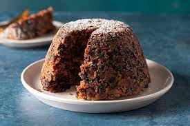

In England, the log that burns on Christmas night is called the Yule log. On each of the four Sundays before the birth of Jesus, a candle is lit, placed in a box. There are processions representing the three wise men and the birth of Christ. In 1814, Prince Albert, husband of Queen Victoria, decorated a tree at Windsor Castle using sweets, candles and fruit. Obviously, aristocratic families followed his example, using increasingly extravagant ornaments: dolls, miniature furniture, small musical instruments, jewelry, toy weapons. Children in England do not receive their gift on the 24th of December, but on the 25th. One of the traditions is for students to stage, in schools or churches, plays about the birth of the Savior. In ancient times, live animals were used to create atmosphere, but nowadays costumes are preferred. Another old custom is to hang stockings on the fireplace in anticipation of gifts, mistletoe is hung in the house, and fir branches around the house. The ancient Druids believed that mistletoe possessed magical powers and that it brought good luck and prosperity by warding off evil spirits. The famous and typical English pudding was called "hackin", from the ingredients. In the 17th century, plum pudding was prepared on Christmas morning itself and was spiked with brandy and flambéed when served. The surprise package called "cracker", which is handed out when serving the Christmas pudding, also belongs to the English Christmas tradition, the mentioned volume states.
